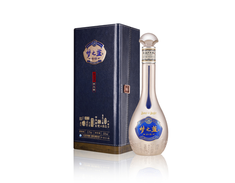

返回首页
中文
English
日本語
中文
English
日本語

梦之蓝手工班
一切伟大皆由双手创造，梦之蓝手工班是最能体验非遗技艺和绵柔老酒的中国高端白酒，可谓是："天人合一，传世手工；绵柔老酒，只此一品"。
工艺
传统手工酿造：梦之蓝手工班采用传统的手工酿造方法，每一瓶都是精细工艺的结晶。
精选原料：使用最优质的粮食和纯净的水源，在酿造过程中的每一个环节都精益求精。
长时间发酵与陈酿：酒体经过长时间的发酵和陈酿，形成深邃而复杂的风味。
口感
入口细腻：白酒入口柔和顺滑，质地精致，让人愉悦。
复杂风味：具有丰富多层次的风味，包括花香、果香和粮香，带来复杂而精细的品饮体验。
回味悠长：回味持久且和谐，甜度平衡，余味绵长。
外观
手工瓶身设计：瓶身设计体现手工酿造的特点，通常带有艺术元素和传统中国图案。
奢华包装：精致细腻的包装凸显产品的高端和手工品质。
独特品牌标识：设计中突出了梦之蓝品牌，象征着品质和传统。
其他
天人合一：梦之蓝手工班源于梦之蓝中央酒区核心区的古老发酵窖池，由中国酿酒大师和中国首席品酒师领衔，携手20年工龄老匠人酿造，集中体现了"天人合一、天地同酿"的酿酒哲学。
传世手工：传承国家非遗洋河古法酿酒技艺 ，历经137道工序，全流程、纯手工酿造。
绵柔老酒：在百年地下酒窖秘制古法封藏，滴滴珍贵皆为绵柔老酒。
只此一品：由于生来稀缺 ，所以十分珍贵，因此也被誉为"酒杯中的活文物、老酒中的艺术品、收藏界的软黄金"。
适合场景
白酒鉴赏家
高端社交
高端礼品